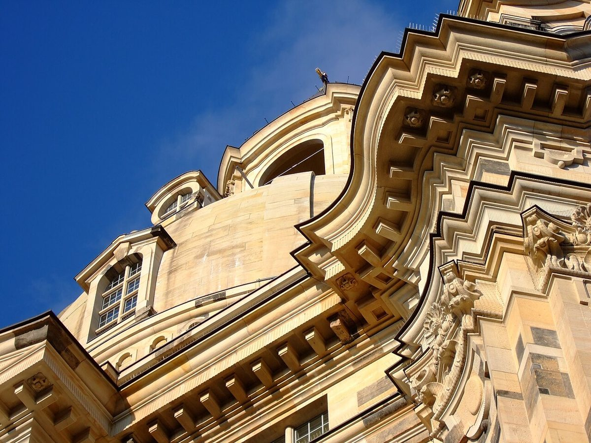

Descubre la majestuosidad de la Frauenkirche de Dresden

La Frauenkirche de Dresden es uno de los símbolos más impresionantes de Alemania. Esta iglesia barroca, ubicada en el corazón de la ciudad, no solo es un lugar de culto, sino también un testimonio de resiliencia y reconstrucción. En este artículo, te guiaremos a través de su fascinante historia, cómo llegar, cuándo visitarla y qué no puedes perderte.
Historia de la Frauenkirche
La Frauenkirche fue construida en el siglo XVIII y rápidamente se convirtió en un ícono de Dresden. Durante la Segunda Guerra Mundial, la iglesia fue destruida por los bombardeos aliados. Permaneció en ruinas durante décadas como un recordatorio de la guerra, pero tras la reunificación de Alemania, se llevó a cabo una reconstrucción meticulosa. Finalmente, en 2005, la Frauenkirche fue reabierta, recuperando su esplendor original.
Cómo llegar a la Frauenkirche
Dresden está bien conectada con otras ciudades importantes de Alemania. Si llegas en avión, el aeropuerto de Dresden está a solo unos kilómetros del centro. Desde allí, puedes tomar un tren o un taxi. Si prefieres el tren, la estación central de Dresden (Hauptbahnhof) está muy cerca de la Frauenkirche. Una vez en el centro, la iglesia es fácilmente accesible a pie, ya que se encuentra en la plaza Neumarkt.
La mejor época para visitar
La Frauenkirche es impresionante en cualquier época del año, pero si buscas un clima agradable y menos multitudes, te recomendamos visitar Dresden en primavera o principios de otoño. Durante estas estaciones, el tiempo es suave y la ciudad no está tan saturada de turistas como en verano. Además, el ambiente en los alrededores de la iglesia es especialmente relajante.
5 Highlights que no puedes perderte
1. **La cúpula**: Sube a la cúpula de la Frauenkirche para disfrutar de una vista panorámica de Dresden. Es un esfuerzo que vale la pena.
2. **El interior**: El diseño barroco del interior es simplemente magnífico. No te pierdas el altar y el órgano.
3. **El exterior**: Admira la arquitectura exterior de la iglesia, que combina piedra arenisca y detalles ornamentales.
4. **La plaza Neumarkt**: Pasea por la plaza que rodea la iglesia, llena de tiendas, cafés y restaurantes.
5. **Eventos especiales**: Si puedes, asiste a un concierto o servicio religioso. La acústica es increíble.
Comer cerca de la Frauenkirche
Después de explorar la iglesia, no dejes de probar la gastronomía local. En los alrededores de la Frauenkirche encontrarás varios restaurantes que sirven platos tradicionales de Sajonia. Prueba el famoso *Dresdner Sauerbraten* (estofado agridulce) o el *Quarkkäulchen* (tortitas de queso). Para una experiencia más informal, dirígete a uno de los muchos cafés y pide una rebanada de *Dresdner Stollen*, un pan dulce típico de la región.
Conclusión
La Frauenkirche de Dresden es un destino imperdible para cualquier viajero. Su historia, arquitectura y entorno la convierten en una experiencia única. Ya sea que estés interesado en la cultura, la religión o simplemente quieras disfrutar de la belleza de esta ciudad alemana, la Frauenkirche te dejará una impresión duradera. ¡Planifica tu visita y descubre todo lo que este increíble lugar tiene para ofrecer!
Haiktec
- Guía Práctica para Dueños de Perros Ocupados: 7 Estrategias Simples para un Cuidado Canino Sin Estrés
- Guía Práctica de Viaje para la Costa Alemana del Norte y Báltico: Itinerario y Gestor de Presupuesto
- Guía Esencial del Viajero: Descubre el Rin, Frankfurt y Heidelberg en 7 Pasos
Text mit KI erstellt und automatisch geprueft.